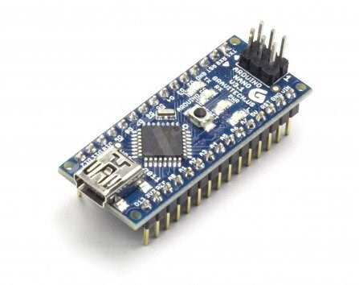
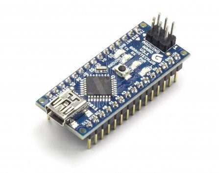
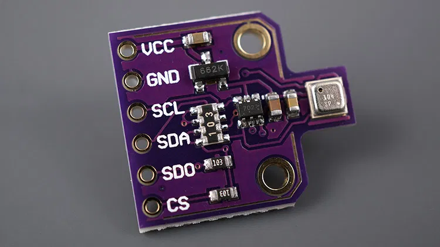
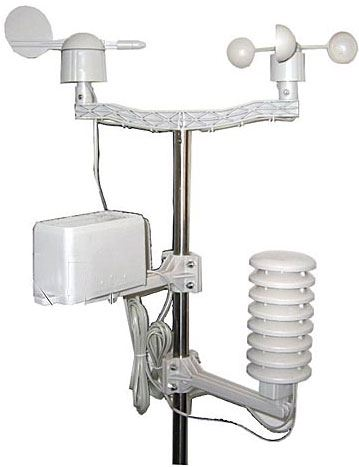

Arduino Nano
Arduino je platforma pro snadný návrh a vývoj elektronických programovatelných zařízení. Zde ji používám pro získávání a počítání dat, která se potom posílají.
Arduino je platforma pro snadný návrh a vývoj elektronických programovatelných zařízení. Zde ji používám pro získávání a počítání dat, která se potom posílají.
Senzor, který dokáže měřit teplotu, vlhkost a tlak. Je připojený přes I2C sběrnici k Arduinu.
Díly originálně pro meteo WH1080, ale zde je používám na připojení k Arduinu. Všechny jsou připojený přes dělič napětí a počítáno na Arduinu.
